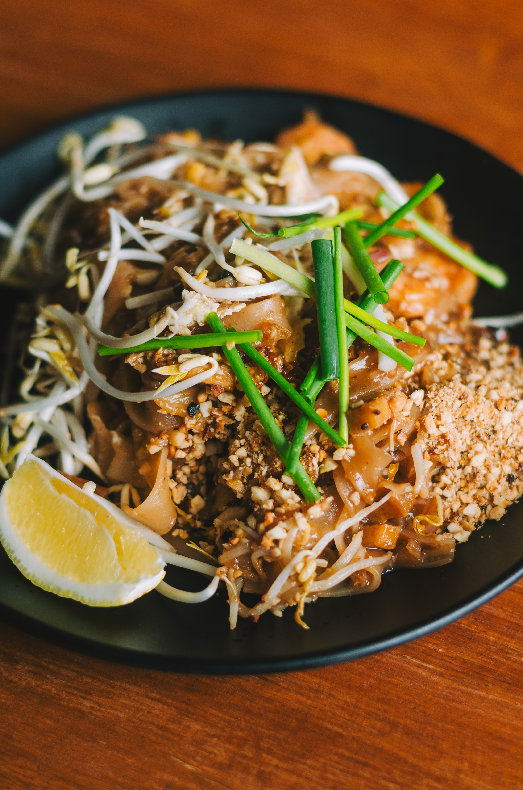

Back to Recips Thai food
Pad Thai with Fresh Shrimp

Pat Thai is food from Thailand
Ingredient
- 1 tbsp prawn fat
- 1 tbsp dried shrimp
- 1 tablespoon
- tbsp firm tofu, sliced
- 8 fresh shrimps
- Pad Thai noodles soaked in water 150 grams
- Pad Thai Sauce 2 ladles
- 100 grams of bean sprouts
- Chives leaves 30 grams
- 2 duck eggs
- Bean sprouts (for side dishes)
- Chives (for side dishes)
- Ground peanuts (for side dishes)
- Sugar (for side dishes)
- Cayenne pepper (for side dishes)
- Lime (for side dishes)
- 200 grams of coconut sugar
- 200 ml fish sauce
- 200 ml. tamarind juice
Steps
- Pad Thai stew By bringing coconut sugar, fish sauce and tamarind paste to simmer until they dissolve together and set aside
- Heat a pan, add oil, add shrimp fat, shallots, radishes and tofu, stir fry until fragrant. Then add the shrimp and stir fry. When the prawns are well cooked, add the Pad Thai noodles. Stir until the noodles are cooked and soft. Then add the sauce and stir to combine
- After stir-frying the noodles with the sauce, then add the bean sprouts, Chinese chives and duck eggs. Wait until the duck eggs start to cook. So stir everything together.
scoop up and serve with utensils for side dishes